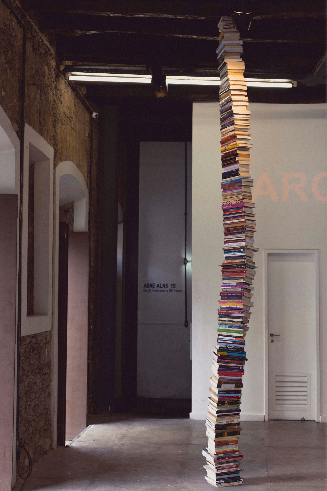
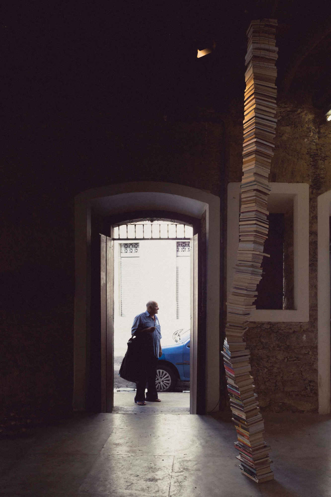
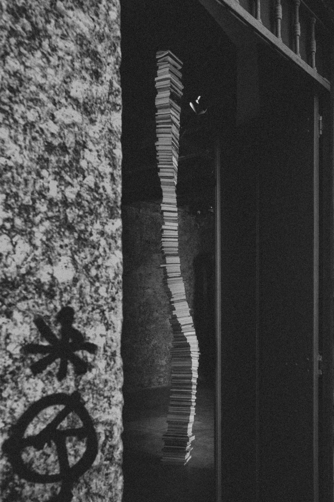
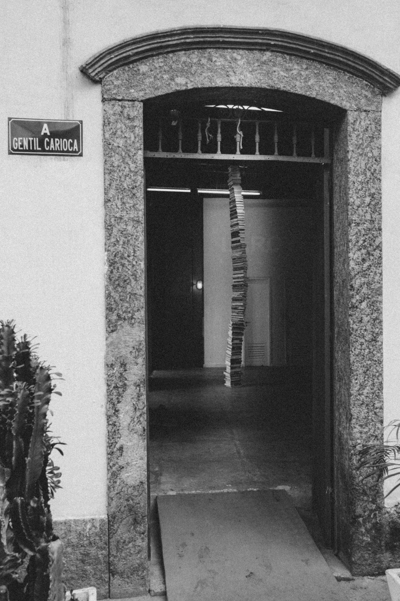

Xs Pensadorxs / Thx Thinkxrs, 2019
Xs Pensadorxs / Thx Thinkxrs, 2019
livros empilhados / pilled books
site specific
4,20 m
a coleção xs pensadorxs é uma obra aberta, colaborativa e em processo, composta não apenas por livros escritos por mulheres, mas proposta como coleção ecotransfeminista, com obras já editadas no brasil. de butler a preciado; de nascimento a haraway; de nery a hooks: disposta como uma viga, uma pilha de livros equilibrada do chão ao teto da galeria se coloca não como experiência monolítica, sintoma do pensamento angloeuropeu e branco condensado n’os pensadores, mas como sustentação do modo de vida que domestica outras existências. o que subexiste para que as mansões da liberdade moderna sobrexistam? as colônias, mulheres, crianças, animais, corpos dissonantes.
the xs collection thinkers is an open, collaborative and in-process work, composed not only with books written by women, but proposed as ecotransfeminist collection, with works already published in Brazil. from butler to preciado ; from nascimento to haraway ; from nery to hooks : arranged like a beam, a pile of books balanced from the floor to the gallery ceiling stands not as a monolithic experience, a symptom of Anglo-European and white thinking condensed in the thinkers tollection [os pensadores], but as sustenance of the way of life which domesticates other existences. what subexists for the mansions of modern liberty to overthrow ? the colonies, women, children, animals, dissonant bodies.
Em colaboração com / in collaboration with: Adriana Azevedo, Alyne Costa, Carolina Rodrigues, Cristina Ribas, Deborah Danowski, Diana Helene, Flávia Cêra, Flavia Trocoli, Juliana Fausto, Maise Zucco, Mariana Pimentel, Raisa Inocêncio.
2019. Abre Alas. Galeria Gentil Carioca. Rio de Janeiro.



